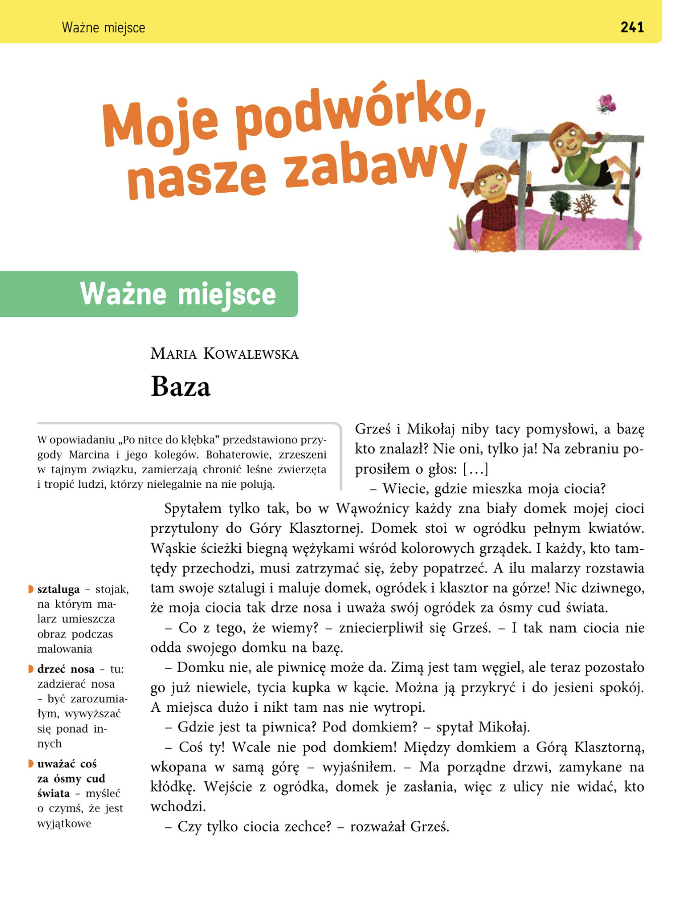
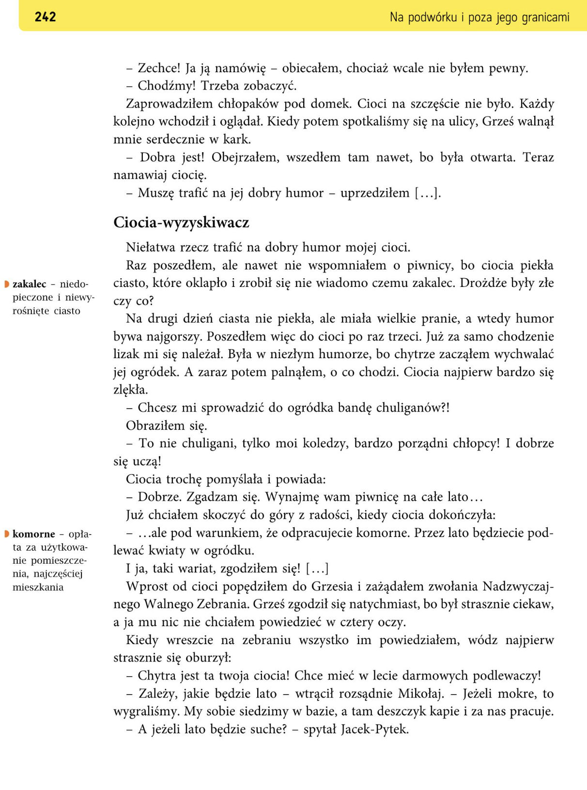
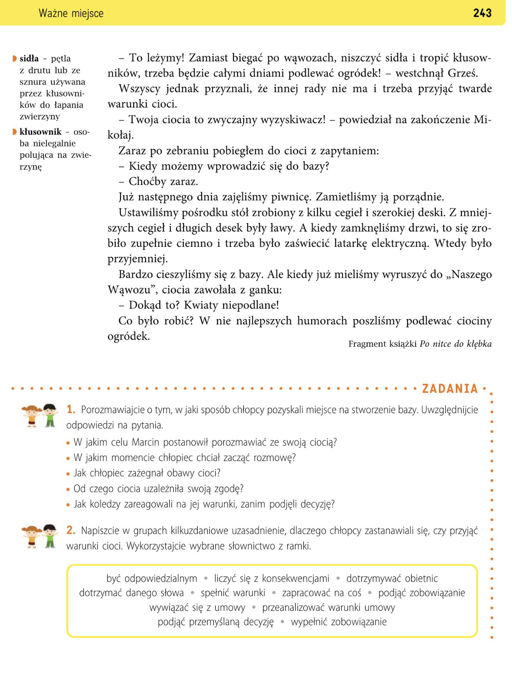
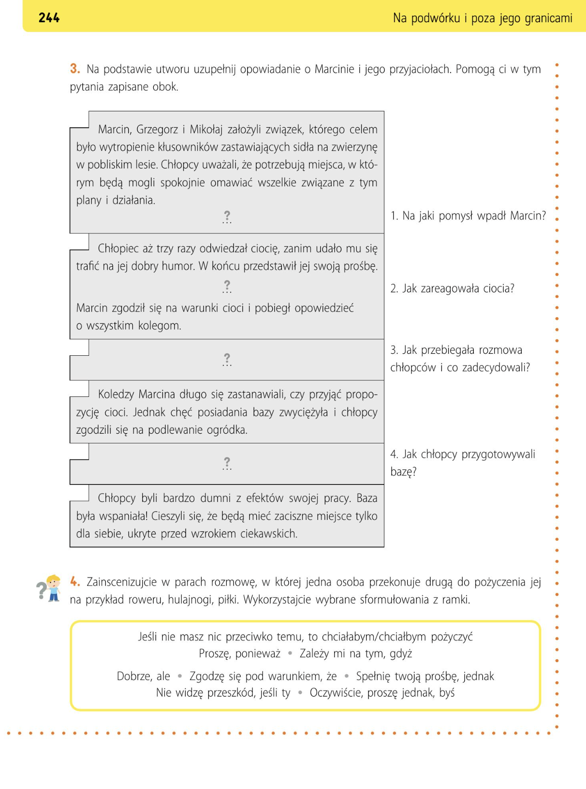

Odpowiedz na pytania:




1. Gdzie chłopcy chcieli zrobić bazę?
2. Dlaczego piwnica była dobra na bazę?
Przeprowadźcie rozmowę na temat tego, jak chłopcy uzyskali miejsce na wykonanie bazy. Skorzystajcie z odpowiedzi na poniższe pytania.
Marcin podjął decyzję, by porozmawiać z ciocią, bo miała dobry humor, a zależało mu na tym, żeby z jej piwnicy zrobić bazę. Marcin przekonał ciocię, że jego koledzy są porządni i dobrze się uczą. Ciocia się zgodziła na zrobienie bazy pod warunkiem, że chłopcy będą podlewać jej kwiaty. Koledzy Marcina nie byli za bardzo zadowoleni z ultimatum, ale się zgodzili, ponieważ zależało im na bazie.
Korzystając z wyrażeń, powiedzcie, co sprawiło, że chłopcy zastanawiali się, czy zgodzić się na warunki cioci.
być odpowiedzialnym - быть ответственным (Человек, который отвечает за свои действия.)
Przykłady:
Przykłady:
Przykłady:
Przykłady:
Przykłady:
Przykłady:
Przykłady:
Przykłady:
Przykłady:
Przykłady:
Chłopcy bardzo chcieli mieć w lecie bazę w piwnicy cioci. Po wspólnym przeanalizowaniu warunków, jakie ciocia wyznaczyła, doszli do wniosku, że są w stanie je spełnić. Wiedzieli, że potrafią dotrzymać obietnicy i mieli nadzieję, że lato może być deszczowe.
Te wyrażenia mówią o odpowiedzialności.
Jeśli coś obiecujesz, musisz dotrzymać słowa i spełnić warunki.
Перед индивидуальной работой учеников стоит проанализировать схему высказывания. Следует обратить особое внимание на элементы, которые нужно дополнить. В первом абзаце это фрагмент, являющийся одновременно главным событием, во втором — средняя часть абзаца, в третьем и пятом — целые абзацы. Задание прежде всего развивает умение создавать высказывания с правильной композицией (вступление, основная часть, заключение), формирует навык написания связных текстов и даёт более слабым ученикам возможность добиться успеха.
Схему можно заполнить вместе на доске, а также она доступна для распечатки ученикам.
1. Na jaki pomysł wpadł Marcin? Marcin wpadł na pomysł, że zrobią bazę ze swoimi kolegami w domu jego cioci, jednak wiedział, że to nie będzie takie proste.
2. Jak zareagowała ciocia? Ciocia najpierw zareagowała nerwowo na propozycję Marcina, bojąc się, że jego koledzy są chuliganami. Jednak Marcin ją przekonał, a ona zgodziła się w zamian za to, że będą podlewać jej kwiaty.
3. Jak przebiegła rozmowa chłopców i co zdecydowali? Koledzy Marcina początkowo nie byli zadowoleni, mieli burzliwą rozmowę — zastanawiając się nad wszystkimi argumentami za i przeciw.
4. Jak chłopcy przygotowali bazę? Chłopcy zabrali się za sprzątanie bazy, na środku ustawili stół i ławy. Z latarki elektrycznej zrobili lampkę.
Zainscenizujcie w parach rozmowę, w której jedna osoba przekonuje drugą do pożyczenia jej na przykład roweru, hulajnogi, piłki. Wykorzystajcie wybrane sformułowania z ramki.
Jeśli nie masz nic przeciwko temu, to chciałabym / chciałbym pożyczyć - Если ты не против, я хотел(а) бы одолжить… (Используется, когда вежливо просишь что-то.)
Przykłady:
Przykłady:
Przykłady:
Przykłady:
Przykłady:
Przykłady:
Przykłady:
Przykłady:
- Cześć, chciałabym pożyczyć od Ciebie hulajnogę.
- No nie wiem, boję się, że mi ją zepsujesz.
- Proszę, moja została u babci, ale możesz być pewna, że gdybym ją zepsuła, to ci ją odkupię.
- Dobrze, zgodzę się pod warunkiem, że oddasz mi ją wieczorem.
- Oczywiście, dziękuję.
Te wyrażenia pomagają: